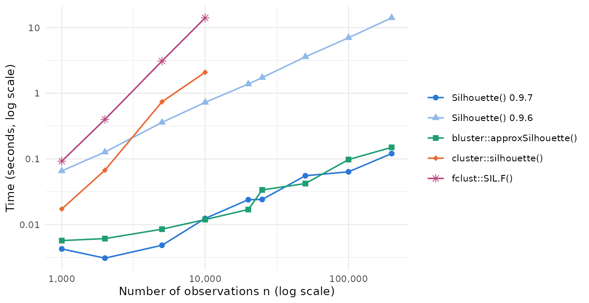

Performance and comparison with other packages
Source:vignettes/articles/benchmarks.Rmd
benchmarks.RmdSeveral R packages compute silhouette widths. This article sets out
what each one computes, how long Silhouette and the
alternatives take and how much memory they need as the number of
observations grows, and how closely the simplified widths of
Silhouette agree with the classical widths. The results
are cached; the scripts that produced them are in data-raw/benchmarks
in the package repository.
What each package computes
| Capability | In Silhouette | In cluster, factoextra, fclust or bluster |
|---|---|---|
| Classical widths from all pairwise dissimilarities | not computed; plotSilhouette() draws
them |
cluster::silhouette(), and in
pam(), clara() and fanny();
fclust::SIL(); factoextra through
cluster
|
| Approximate classical widths in linear time | none | bluster::approxSilhouette() |
| Simplified widths from distances or similarities to each cluster |
Silhouette(), medoid and PAC |
none |
| Widths from membership or posterior probabilities |
softSilhouette(),
cerSilhouette(), dbSilhouette()
|
none |
| Membership-weighted (fuzzy) average |
average = "fuzzy" for every width |
fclust::SIL.F(), on classical widths |
| Extended silhouette for multi-way partitions | extSilhouette() |
none |
| Silhouette plot |
plotSilhouette()
(ggplot2), also for results of
cluster, factoextra and
drclust
|
factoextra::fviz_silhouette()
(ggplot2); plot() in
cluster (base graphics) |
| Input stored | an \(n \times K\) matrix | \(n(n-1)/2\) dissimilarities (cluster, factoextra, fclust); the \(n \times p\) data (bluster) |
The classical silhouette of Rousseeuw
(1987) compares each observation’s average dissimilarity to the
members of its own cluster with its average dissimilarity to the members
of the nearest other cluster. bluster::approxSilhouette()
(Lun 2023) replaces those averages with
root-mean-squared distances, which it can compute from the cluster
centroids; it is designed for crisp partitions of Euclidean data.
Silhouette instead compares distances (or similarities)
to a representative of each cluster (Van der Laan
et al. 2003), or membership probabilities, so any \(n \times K\) matrix will do: distances to
medoids under any dissimilarity, dynamic time warping distances to
time-series prototypes, or the posterior probabilities of a mixture
model. The widths therefore differ from the classical widths, as the
last section shows.
Time and memory
We timed each computation end to end, from the data and the fitted partition to the average width, so that each method pays for building its own input:
# cluster: classical widths from the n x n distances
D <- stats::dist(X); summary(cluster::silhouette(cl, D))$avg.width
# Silhouette: simplified widths from the n x K distances to the centers C
summary(Silhouette(proxy::dist(X, C)), print.summary = FALSE)$avg.width
# bluster: approximate classical widths
mean(bluster::approxSilhouette(X, cl)$width)
# fclust: fuzzy silhouette of Campello and Hruschka on classical widths
fclust::SIL.F(X, U, alpha = 2)The data were five-dimensional Gaussian mixtures with \(K = 5\) well-separated components;
cl was the k-means partition, C its centers
and U memberships of fuzzy c-means form. Times are medians
over 10 repetitions for \(n \le
10\,000\) and 3 above, measured with bench on
one core of an Intel Xeon processor at 2.80 GHz with 8 GB of memory,
running R version 4.3.3 (2024-02-29) on Ubuntu 24.04.4 LTS with the
reference BLAS and LAPACK. Both versions were timed on the same machine;
the results store sessionInfo(), the BLAS and LAPACK
libraries and the tested source. The timings are conditional on this
design and machine: they show how the costs grow with \(n\), not a general ranking of the
packages.

At \(n = 10\,000\) the classical
computation with cluster took 2.09 seconds and
fclust::SIL.F() took 14.1 seconds, against 0.012 seconds
for Silhouette(). The vectorized code of version 0.9.7
needed 0.12 seconds at \(n =
200\,000\), where version 0.9.6 needed 14.1 seconds for identical
widths. Fuzzy averaging and the widths from membership probabilities
cost about the same as the crisp computation.
Memory was measured separately, by running each computation once in a fresh R process and recording the increase in its peak resident memory. The classical computation was attempted at every size in this way.
| n | cluster | Silhouette | bluster |
|---|---|---|---|
| 1,000 | 0.02 | 0.004 | 0.006 |
| 5,000 | 0.74 | 0.005 | 0.008 |
| 10,000 | 2.1 | 0.01 | 0.01 |
| 20,000 | killed | 0.02 | 0.02 |
| 25,000 | killed | 0.02 | 0.03 |
| 50,000 | fails | 0.06 | 0.04 |
| 100,000 | fails | 0.06 | 0.10 |
| 200,000 | fails | 0.12 | 0.15 |
| n | cluster | Silhouette | bluster | size of dist object | size of n x K matrix |
|---|---|---|---|---|---|
| 1,000 | 11 MB | <1 MB | <1 MB | 4 MB | 40 kB |
| 5,000 | 286 MB | <1 MB | <1 MB | 100 MB | 200 kB |
| 10,000 | 1.1 GB | <1 MB | <1 MB | 400 MB | 400 kB |
| 20,000 | killed | 3 MB | 3 MB | 1.6 GB | 800 kB |
| 25,000 | killed | 5 MB | 9 MB | 2.5 GB | 1 MB |
| 50,000 | fails | 12 MB | 28 MB | 10 GB | 2 MB |
| 100,000 | fails | 41 MB | 29 MB | 40 GB | 4 MB |
| 200,000 | fails | 59 MB | 41 MB | 160 GB | 8 MB |
“<1 MB” means that the increase was absorbed by memory the R
process had already reserved. The last two columns give the size of the
input each approach stores. On the 8 GB test machine, the classical
computation was killed by the operating system at \(n = 20\,000\) and \(25\,000\), after R had built the 1.6 GB and
2.5 GB dist objects; from \(n =
50\,000\) R could not allocate the dist object at
all. Its storage grows with \(n^2\), so
each doubling of \(n\) quadruples it;
the size at which it fails depends on the machine, but not the
growth.
For crisp partitions, Silhouette() and
bluster::approxSilhouette() both scale linearly and both
run in well under a second at \(n =
200\,000\), so speed and memory do not decide between them. What
decides is the input, and how close the result should be to the
classical widths.
Agreement with the classical silhouette
We simulated 50 data sets for each of six settings with
MixSim: \(n = 500\),
four elliptical Gaussian components with equal mixing proportions,
dimension \(p \in \{2, 5\}\) and
average overlap \(\bar\omega \in \{0.001,
0.01, 0.05\}\). For each data set we fitted k-means for \(K = 2, \dots, 8\) and computed the
classical average width from all pairwise distances, the medoid and PAC
averages of Silhouette() from the distances to the
centroids, and the approximation of
bluster::approxSilhouette().
| p | overlap | r, medoid | r, bluster | difference, medoid | difference, PAC | difference, bluster |
|---|---|---|---|---|---|---|
| 2 | 0.001 | 0.949 | 0.997 | +0.069 | -0.028 | -0.025 |
| 2 | 0.010 | 0.945 | 0.996 | +0.096 | -0.022 | -0.032 |
| 2 | 0.050 | 0.943 | 0.995 | +0.115 | -0.011 | -0.030 |
| 5 | 0.001 | 0.943 | 0.999 | +0.113 | -0.034 | -0.014 |
| 5 | 0.010 | 0.940 | 0.999 | +0.131 | -0.015 | -0.014 |
| 5 | 0.050 | 0.926 | 0.998 | +0.134 | +0.000 | -0.011 |
| p | overlap | medoid | PAC | bluster |
|---|---|---|---|---|
| 2 | 0.001 | 88% | 86% | 92% |
| 2 | 0.010 | 92% | 90% | 96% |
| 2 | 0.050 | 92% | 90% | 94% |
| 5 | 0.001 | 98% | 94% | 92% |
| 5 | 0.010 | 92% | 92% | 96% |
| 5 | 0.050 | 92% | 94% | 92% |
Here r is the mean correlation between the individual widths and the classical widths at the true \(K = 4\), and the difference is the mean difference between the average width and the classical average at \(K = 4\).
The simplified medoid widths rank observations much as the classical widths do (correlations 0.93 to 0.95), and their average peaks at the same \(K\) as the classical average in 88% to 98% of data sets (PAC: 86% to 94%). Their level is higher, by 0.07 to 0.13, because the distance to a centroid is smaller than the average distance to all members of a cluster; the PAC average is close to the classical level. Simplified averages should therefore not be compared with classical averages or with thresholds published for them.
The bluster approximation is much closer to the classical widths: correlations 0.995 to 0.999, an average 0.011 to 0.032 below the classical one, and the same \(K\) in 92% to 96% of data sets. It achieves this by accounting for the spread of each cluster, which the distance to a representative ignores.
With 50 data sets per setting, these shares carry Monte Carlo error: the 95% interval around 92% runs from about 81% to 97%, so differences of a few points between settings or methods are within simulation variability.
Three further settings, each with 50 data sets at overlap 0.01, check less regular data: unequal cluster sizes (smallest mixing proportion 0.05), \(p = 10\), and 5% outliers.
| setting | r, medoid | r, bluster | same K, medoid | same K, PAC | same K, bluster |
|---|---|---|---|---|---|
| unequal sizes | 0.947 | 0.996 | 98% | 98% | 100% |
| p = 10 | 0.933 | 0.999 | 86% | 86% | 86% |
| 5% outliers | 0.942 | 0.982 | 92% | 78% | 88% |
The conclusions carry over, although agreement on \(K\) is lowest for the PAC average with outliers. They are limited to what was simulated: Gaussian mixtures with four components, \(n = 500\), at most ten dimensions, k-means partitions and Euclidean distances.
No index recovered the true \(K = 4\) reliably in these settings: the classical average did so in 28% of data sets, the medoid and PAC averages in 31% and 33%, and the bluster average in 31%. The silhouette, simplified or not, favors compact, well-separated groups rather than the components of an elliptical mixture.
Which to use
-
The classical widths of a crisp partition. Use
cluster::silhouette()while the \(n(n-1)/2\) dissimilarities fit in memory, andbluster::approxSilhouette()for Euclidean data beyond that.plotSilhouette()draws either result; see Silhouette plots. -
Soft and model-based clusterings. Use
softSilhouette(),cerSilhouette()ordbSilhouette()on the membership or posterior probabilities, orSilhouette()withprob_matrixon distances to the cluster centers; seevignette("soft-clustering", package = "Silhouette"). -
Proximities to cluster representatives that are not
Euclidean distances to centroids, such as medoid
dissimilarities or time-series distances to prototypes. Use
Silhouette(). -
Block and multi-way partitions. Use
extSilhouette()on the mode-wise results; seevignette("multiway", package = "Silhouette"). -
The fuzzy silhouette of Campello and
Hruschka (2006) on classical widths. Use
fclust::SIL.F()for moderate \(n\), oraverage = "fuzzy"in Silhouette for the same weighting of simplified widths.
Reproducing the results
The scripts are in data-raw/benchmarks,
with instructions in its README.md. The memory probes read
/proc/self/status and so need Linux. The cached results
record the machine they ran on:
str(attr(readRDS("data/bench_097.rds"), "session"))
#> List of 8
#> $ R : chr "R version 4.3.3 (2024-02-29)"
#> $ cpu : chr "Model name: Intel(R) Xeon(R) Processor @ 2.80GHz"
#> $ ncores : int 2
#> $ mem : chr "Mem: 7 2 5 0 0 5"
#> $ Silhouette: chr "0.9.7"
#> $ cluster : chr "2.1.6"
#> $ proxy : chr "0.4.27"
#> $ bluster : chr "1.12.0"